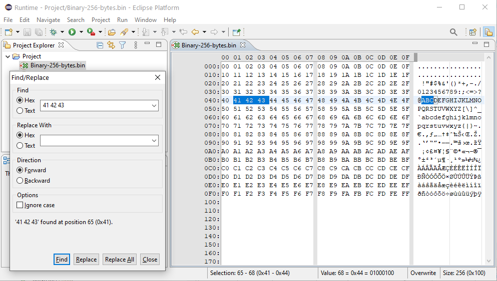

Hinweis: Das ist die originale Online-Hilfe des JavaHexEditor-Projekts. Sie ist daher nur in Englisch verfügbar.
javahexeditor
User Guide
Introduction
javahexeditor
is a
hex
editor
written in
Java
. It is available as
Eclipse
plugin and as a stand-alone application for Windows, Linux and MacOS
X using
SWT
widgets. It offers:
- Support for very large files
- Hex, ASCII and Unicode find
- Overwrite/insert modes
- Binary and text cut/copy/paste
- Undo/redo
- English and German screen texts
Usage
Eclipse Editor
Any file currently in the workspace (but not part of a jar file) with
one of the extensions listed below can be opened with
javahexeditor
by right clicking on the file name, expanding the "Open With" menu
item, and selecting
javahexeditor
:
a, bin, cab, class, com, dat, data, drv, dll, exe, hex, iso,
jar, lib, o, out, part, pdf, png, ram, res, rom, sys, txt, zip
.
Other file extensions can be added in the preferences dialog via
"Window / Preferences... / General / Editors / File Associations".
Browsing the File Content
You can move around the file as you would in any other text
editor. To change from hex to text, or vice versa, press the [Tab]
key, or click the mouse in
the appropriate area.
To locate a specific position within the file use the Goto
dialog. The dialog can be opened via the menu item "Edit / Go to
Location.." (CTRL-L). This
kind of positioning is especially useful
when editing very big files and the scroll bar is not accurate
enough.
To select text move the cursor to the selection start and then
press the SHIFT key when changing the cursor to the selection end.
Editing the File Content
There are two modify modes: insert and overwrite. You can switch
between insert/overwrite modes with the INSERT key in your keyboard
(as in some text
editors, for instance).
You can insert/delete/trim bytes in insert mode only. In overwrite
mode the file length never changes and you cannot paste things
bigger than the space
left in the file.
You can insert other files by copying by copying them to the
clipboard. This can be achieve for example via "Edit / Copy"
(CTRL-C) in Windows and and
pasting it in
javahexeditor
via "Edit / Paste" (CTRL-V). Copying to a text editor has a limit of
4 MB. Binary copying (from
javahexeditor
to
javahexeditor
) is limited by the free disk space only.
Modified text is displayed in blue, so it is easier to see the
changes made to the file.
Screen Shots
This is how the Eclipse plugin looks like. Here the find and replace
dialog is currently open.

This is how the stand-alone application looks like. Here the block
selection dialog is currently open.

Change History
Version 0.5.2 from 2020-08-10
- Implemented feature #16 to display the file size in the status
bar and adapt status bar spacing based in actual file size
- Implemented feature #15 to support screen scaling in
SelectBlockDialog
- Fixed bug #18 preliminary to not cause exceptions in the Eclipse
error log when clicking outside of the resized text area
- Fixed bug #17 regarding SWT related exception
- Fixed bug #16 to make FindReplaceDialog tolerant regarding
whitespaces in the input
- Fixed bug #14 regarding font resizing issues
- Added SWT wrapper class to make the program compatible with all
SWT versions from 4.7.3 to 4.17
- Extended FindReplaceDialog, so it is now pre-filled with values
from currently active selection
- Added an exception dialog to display exception and startup
problems
- All actions and menu items which make no sense for empty files
are now disabled, if the file is empty
- Default input mode for new files and empty files is now always
"Insert"
- Default input mode for non-empty files is now always "Overwrite"
- Swapped the positions for "Find" and "Goto Location" in the
stand-alone version, so they are in sync with Eclipse
Version 0.5.1 from 2019-01-12
- Added stand-alone builds for Windows, Linux and OS X, each for
32/64 bit
- Updated online help
- Added new large icons and fix icon display issues
- Updated to Java 8 as minimum requirement
- Fixed bug #12 - Editor crashes when editing a line out of sight
while using overwrite mode